Bagaimana hendak mengekalkan aktiviti?

Konsep Mengekalkan Aktiviti

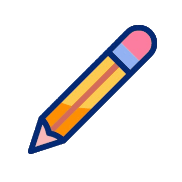 Kekalkan Sisih, Susun, Suci
Memelihara dan mengekalkan taraf penjagaan kebersihan dan penyusunan tempat kerja yang teratur.
Kepentingan Aktiviti 4S
Faedah mengekalkan & mengamalkan
4S dengan jayanya:
Untuk memastikan kawasan kerja BERSIH dan KEMAS.
Untuk memastikan hasil kerja pengeluaran berkualiti.
Memudahkan kerja dan persekitaran selamat.
Memastikan proses kerja berjalan dengan lancar.
Menjamin produktiviti dan pengeluaran.
Meningkatkan moral pekerja.
 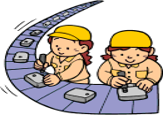
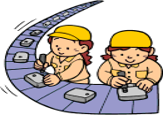
Konsep Mengekalkan Aktiviti
① Mapping [Layout]
② PIC [By Zone]

③ Kondisi (Condition)
④ Konsep Berlabel
◉ Maksud
◆ Konsep berlabel adalah petunjuk / penunjuk untuk menunjukkan sesuatu benda atau barang yang digunakan.
◉ Point
◆ Buat point yang jelas untuk memberitahu semua orang.
◆ Supaya nampak tempatnya secara keseluruhan [Layout Mapping].
◆ Dengan adanya label, 'BARANG' & 'TEMPAT'. Maka, orang akan lebih memahami lokasi barang dan barang apa yang sepatutnya berada di situ.
◆ Barang juga akan mudah untuk dikembalikan semula selepas digunakan.
4.2 Konsep berlabel
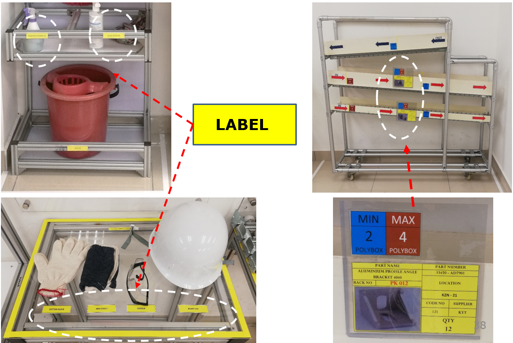4.3 Konsep Berlabel Sebelum & Selepas Kaizen
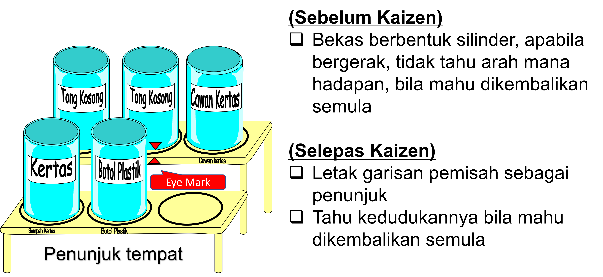⑤ Sistem Border
5.1 Border
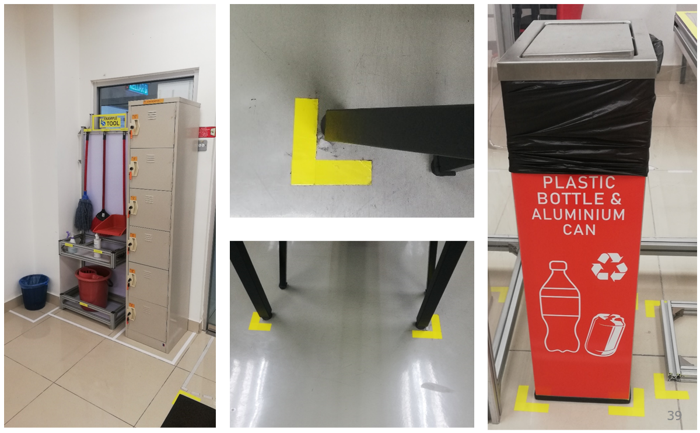5.2 Std: Specification drawing [Border]

5.3 Std: Specification drawing [Walkway]
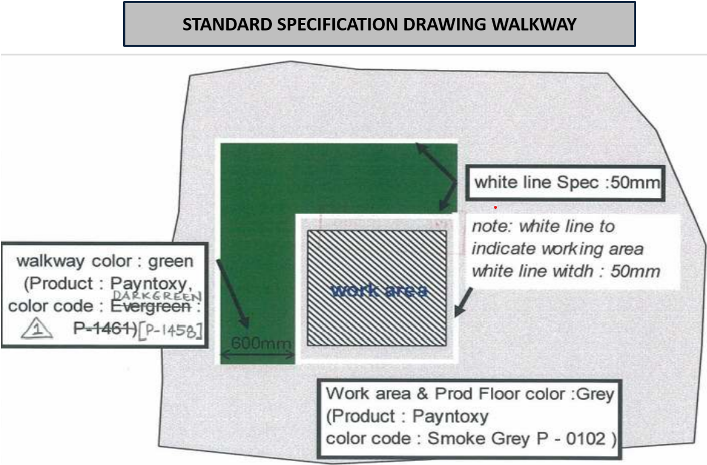⑥ Barang Tetap
Kawalan 'Barang Tetap' adalah:
Cara untuk megembalikan sesuatu BARANG setiap kali digunakan.
Cara kawalan 'Barang Tetap' adalah seperti di bawah:-
- ① Kawalan bekas Berbentuk → Garisan yang menunjukkan bentuknya.
- ② Kawalan dengan Nombor → Barang & tempat diletak nombor yang sama.
- ③ Kawalan dengan Warna → Gunakan jenis warna yang sama untuk membezakan kumpulannya (group).
- ④ Kawalan dengan Gambar → Tampal gambar untuk melihat rupa sepenuhnya.
Kawal secara bekas berbentuk
■ Lukis garisan yang berupa BARANG tersebut.
■ Apabila BARANG tersebut dibawa pergi, tinggal bekasnya di tempat itu iaitu, menunjukkan sedang digunakan.
※ Arah kedudukannya juga jelas bila mahu dikembalikan semula.
Kawal dengan nombor
■ Letak nombor pada BARANG.
Letak nombor yang sama
pada tempat letaknya juga.
■ Belum dikembalikan @ sedang digunakan dapat diketahui dengan hanya melihat sahaja.
Kawal dengan Warna
■ Warna yang sama untuk membezakan kumpulannya
■ Tahu segera di mana untuk kembalikan barang tersebut.
Kawal dengan gambar
■ Ambil gambar dalam keadaan semua BARANG terdapat di dalamnya.
■ Bila lihat gambar, apa yang tidak ada @ salah tempat letak akan dapat diketahui segera.
⑦ Tanda Aras

Tujuan:
Menentukan kedudukan / mengawal barang yang disusun agar dapat memenuhi keperluan System FIFO (‘First In First Out’).
Kesan:
Memberi kelancaran proses kerja dengan tidak meletakkan part kedalam ‘box’ secara berlebihan.
Target/Sasaran:
Part tidak mengalami lebihan stok dan dapat mengelakkan kecacatan pada part tersebut.
Sistem 'Penanda Aras'

■ Upper Level (Max).
■ Lower Level (Min).
Buat garisan sebagai kawalan untuk menentukan jumlah yang perlu ditambah.
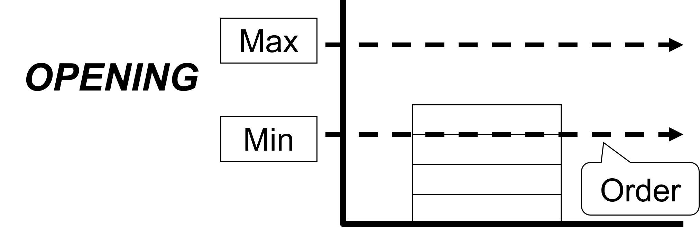※ Kawalan supaya stok tidak kehabisan.
⑧ Stok tidak kehabisan
Sistem 2 bekas

Aktiviti Praktikal - Game 2
Kawalan 5S
Check Sheet
Simulation Material
Konsep Mengekalkan Aktiviti
Konsep [PDCA]

Konsep Menjayakan Aktiviti
Konsep [TPT]
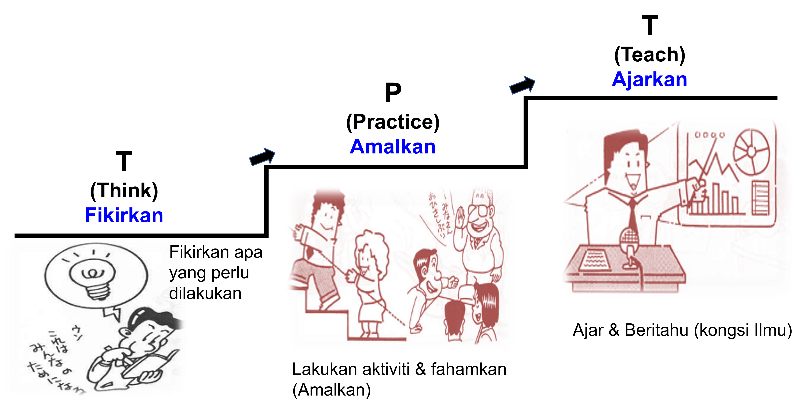Kenapa Pentingnya 5S?
Tujuan Perlunya 5S?
① 7 Muda (Pembaziran)
Menghapuskan pembaziran.
② SQCDM
SQCDM dapat dilaksanakan dengan berkesan.
③ Keselamatan
Kadar kemalangan dapat dielakkan.
① 7 Muda (Pembaziran)
- Pengeluaran berlebihan.
- Pergerakan.
- Kecacatan & baikpulih.
- Proses berlebihan.
- Menunggu.
- Pengangkutan.
Supaya terhasilnya 'nilai tambah' (value added) kerana tiada MUDA (Pembaziran)
Dalam tugasan ada:
① Yang menghasilkan nilai tambah.
② Yang tidak menghasilkan nilai tambah
③ Muda
Penggunaan 4s sepenuhnya membantu mengurangkan MUDA dalam tugasan-tugasan yang tiada 'nilai tambah'.
Sasarannya bukan hanya setakat membuat genba kemas & cantik sahaja tetapi menjadikan tiada MUDA [ 0 ].
Video 4 [Auto Transfer Troley]
Video 5 [Core Transfer Trolley]
Video 6 [Surface Check]
② SQCDM
SQCDM dapat dilaksanakan dengan berkesan.
① Safety
 Cegah Kemalangan.
Cegah Kemalangan.
▸ Tempat keja yang bersih adalah tempat kerja yang selamat.
▸ Contoh: Jika lantai di kawasan kerja berminyak dan tidak dibersihkan kemalangan boleh berlaku jika ada pekerja terpijak lantai yang berminyak tersebut (tergelincir).

② Quality
 Menghalang, Mencegah Kesilapan.
Menghalang, Mencegah Kesilapan.
▸ Tempat kerja yang bersih dapat
menghasilkan kualiti barangan yang
bermutu tinggi.
▸ Contoh: Tempat kerja bersih, pekerja rasa gembira dan bersemangat untuk bekerja, jadi mereka akan kurang membuat kecacatan atau kesilapan pada barang yang dipasang.

③ Cost
 Penjimatan.
Penjimatan.
▸ Apabila pengeluaran mencapai target dan peralatan kurang
mengalami
kerosakan, maka dengan secara tidak langsung kos baikpulih dapat dikurangkan.

④ Delivery
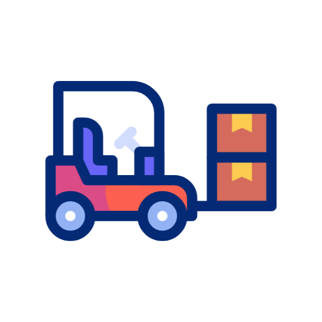 Elak Kerosakkan & Pembaziran.
▸ Tempat kerja yang bersih menghasilkan pengeluaran yang tinggi.
▸ Contoh: Bila tempat kerja bersih,pekerja akan berkerja dengan lebih bersemangat dan secara tak langsung pengeluaran akan meningkat.

⑤ Morale
Lebih Disayangi & Dihormati.
▸ Tempat kerja yang bersih dapat meningkatkan moral.
▸ Contoh: Bila tempat kerja itu bersih dan selesa, pekerja akan berkerja dengan lebih produktif & bersemangat.

③ Keselamatan
◆ 3 Faktor Kemalangan:
① Faktor Teknikal
▸ Mesin dan peralatan kerja tiada penyelenggaraan dan piawaian yang ditetapkan.
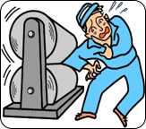② Faktor Fizikal
▸ Kerja / tugas yang diberi tidak sesuai dengan bentuk badan si pekerja
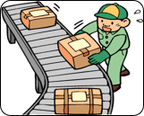③ Faktor Psikologi
▸ Tugas / kerja yang diberi tidak sama dengan pemikiran si pembuat kerja.
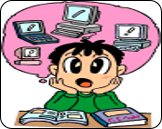Kadar kemalangan dapat dielakkan.
Model Line
Kenapa ianya perlu?

Aktiviti Praktikal – Game 3
Uji Kemahiran Minda
Aktiviti Praktikal – Game 3
Uji Kemahiran Minda
Arahan kerja:
■ Cari nombor mengikut turutan dari no. 1 – 49
■ Dalam masa 20 saat
■ Tandakan /
■ Berhenti menanda [20 saat]
■ Padam semula penandaan
Cari nombor mengikut urutan
1 - 49
Berapa banyak yang anda boleh jumpa dalam masa 20 saat?

Sudah nampak lebih baik!
(Mungkin sedikit, tetapi masih tidak cukup baik.)

Guna SUSUN untuk menyusun aliran yang cekap?

Selesai!

Q&A
Post Test
Evaluation

Borang Kedatangan [Log Out]

Borang Kedatangan [Log Out]